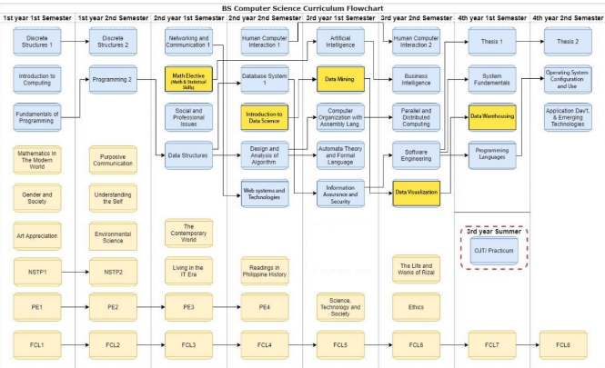
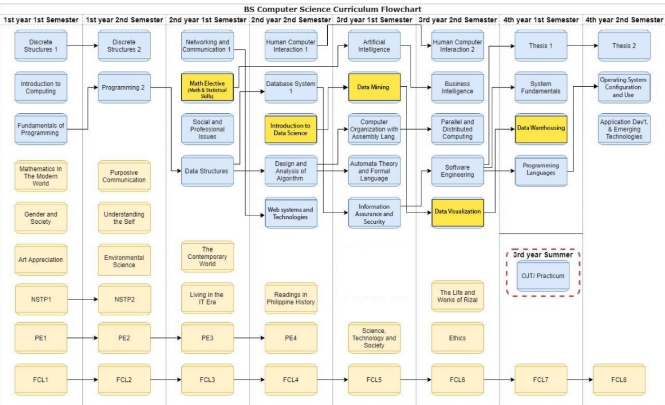
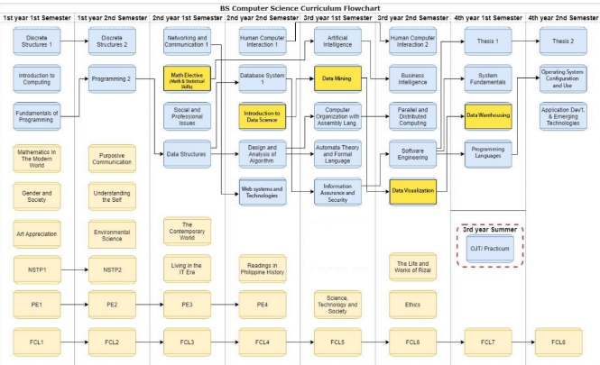

he University of Perpetual Help System JONELTA believes and invokes Divine Guidance in the betterment of the quality of life through national development and transformation, which are predicated upon the quality of education of its people. Towards this end, the Institution is committed to the ideals of teaching, community service and research as it nurtures the value of “Helpers of God”, with “Character Building is Nation Building” as its guiding principle.
The UPHS is a premiere University that provides unique and innovative educational processes, contents, end-results for the pursuit of excellence in academics, technology, and research through community partnership and industry linkages.
The University takes the lead role as catalyst for human resource development, and continue to inculcate values as a way of strengthening the moral fiber of the Filipino individuals proud of their race and prepared for exemplary global participation in the realm of arts, sciences, humanities, and business.
It sees the Filipino people enjoying quality and abundant life, living in peace and building a nation that the next generation shall be nourishing, cherishing and valuing.
The UPHS is dedicated to the development of the Filipino as a Leader. It aims to graduate dynamic students who are physically, intellectually, socially, spiritually committed to the achievement of the best quality of life.
As a system of services in health and education, the UPHS is dedicated to the formation of Christian services and research-oriented professionals and leaders in quality education and health care.
We provide students with the knowledge and understanding of emerging technologies so that they become lifelong learners imbued with the Perpetualite character and values, and are able to adapt to technological changes and function in an informational society through updated, specialized, and individualized instructions and support programs.
Leader in providing IT Professionals who are competitive with the best in the world. We challenge, encourage, and support all learners to be responsible for developing their abilities with respect for self, others, and the environment.
The increasing demands and applications of computers and information technology in the different fields of endeavor required the need to provide more extensive and specialized training in computers and research. This paved the way to the opening of the BS Computer Science three years later.
Our advanced and state of the art computer facilities simulating the corporate environment, a component line up of faculty members, an up to date and well balanced curriculum and our continuing linkages with the different companies are keystone in delivering the kind of training that is at par with the institution's commitment to character building. With this as our mission coupled with massive technical training will be our basic foundation to help build a better nation.
A leader in providing IT Professionals who are competitive with the best in the world. We challenge, encourage, and support all learners to be responsible for developing their abilities with respect for self, others, and the environment.
The College offers one associate program and two degree programs namely Bachelor of Science in Computer Science and Bachelor of Science in Information Technology. These two are the leading academic programs in the field of ICT today.
Is an applied computer four year degree course. It is intended for those who want a career in developing computer technology application in the different fields of endeavor.
The BSIT (Bachelor of Science in Information Technology) prepares students to be professional in this field. By the time they graduate, the students are expected to:
Is an applied computer four year degree course. It is intended for those who want a career in developing computer software application in the different fields of endeavor.
The BSCS (Bachelor of Science in Computer Science) prepares students to be professional in this field. By the time they graduate, the students are expected to:

FCL 1 is the introductory course in the UPHSL Filipino Christian Living Program. It defines and explains the Catholic faith inspiration of the Founders, which became the pillars of the philosophy, vision and mission of the institution. The discussions include the Eight Perpetualite Values, the Logo, the Perpetualite Hymn and the Perpetualite Pledge. The first part covers the identity of the University and the second part covers the identity of the Perpetualite. It also introduces the students to the initiation sacraments of Baptism, Confirmation and Holy Eucharist The experiential methodology is highlighted in the discussions on Filipino good manners and right conduct.
This course is designed to serve as an introduction to the different perspectives in the study of gender and sexuality. Throughout this course we will approach gender and sexuality as socially, anthropologically, biologically and psychologically contingent concepts. The rigidity of gender binaries, notions of gender difference, and how gender identity is formed through processes of socialization and social control will also be discussed. Students will be introduced to relevant theories of gender and sexuality and will be asked to apply these theories to a range of contemporary issues that are relevant to our local contexts, as well as a broader international context.
This course is designed for students to remain relevant in an ever-evolving world of information technology. With a focus on the most critical elements that drive technology today, the course delivers a comprehensive solution for learning on how to succeed in any environment that requires the use of computers, devices and the Internet.
A three-unit course that develops students' ability to appreciate, analyze, and critique works of art. It equips students with broad knowledge of the practical, philosophical, and social relevance of arts. Likewise. it aims to develop students' genuine appreciation for Philippine arts.
This course deals with nature of mathematics, appreciation of its practical, intellectual, and aesthetic dimensions, and application of mathematical tools in daily life.
Module 1 of NSTP-CWTS deals with the rogram component or activities contributory to the general welfare and betterment of life for the members of the community or the enhancement of its facilities, especially those devoted to improving health, education, environment, entrepreneurship, safety, recreation and moral of the citizenry and other social welfare services. It tackles environmental education, personal and social values skills, human needs, rights and leadership. This aim in promoting each individual participated both by teachers and students concern to alleviate their knowledge and enhance their skills in handling situations particularly environmental issues and community problems and opportunity to come up with solutions that will provide them of good health and better environment for sustainable development.
This course reintroduces the fundamental movement patterns that consist of non-locomoter skills, which are integrated with core training to meet the demands of functional fitness and the adaptation of movement competencies to independent physical activity pursuits. In conjunction with fitness and wellness concepts, exercise and healthy eating principles, periodic evalution will be conducted of one’s level of fitness and physical activity, as well as eating patterns to monitor one’s progress and achievement of personal fitness and dietary goals.
FCL 2 focuses on the nature of man's relationships with God and to his fellow men. It deals with salvation history and the importance Of love as the basic elements in being a man of God. It highlights the basic principles of morality and the celebration Of the sacred sacraments Of healing such as the reconciliation, penance and anointing of the sick.
Environmental Science is designed for environmental study not only awareness among students but the solution of environmental problems and issues. It deals with the environmental and the economy of Mother Earth and the ecosystem of man.
A three-unit course that develops students' communicative competence and enhances their cultural and intercultural awareness through multimodal tasks that provide them opportunities for communicating effectively and appropriately to a multicultural audience in local and global contexts, It equips students with tools for critical evaluation of a variety of texts and focuses.
UTS is a course that deals with the nature of identity and the factors and forces that affect the development and maintenance of personal identity. It further intends to facilitate the exploration of issues and concerns regarding self and identity. The course is divided into three major parts-the first part is understanding the construct of the self from various disciplinary perspectives: the second part deals with exploring the various aspects that make-up the self; and the third part focuses on identifying the three areas of concern for young students: learning. goal setting and management of stress.
Module 1 of NSTP-CWTS deals with the program component or activities contributory to the general welfare and betterment of life for the members of the community or the enhancement of its facilities, especially those devoted to improving health, education, environment, entrepreneurship, safety, recreation and moral of the citizenry and other social welfare services. It tackles environmental education, personal and social value skils, human needs, rights and leadership. This aim in promoting each individual participated both by teachers and students concern to alleviate their knowledge and enhance their skills in handling situations particularly environmental issues and community problems and opportuniry to come up with solutions that will provide them of good health and better environment of sustainable development.
This course builds on the foundation of motor skills achieved through core training. It will provide experiences in a variety of exercise programs for the purpose of maintaining and enhancing cardiorespiratory and musculoskeletal fitness (i.e., course stability, muscle strength, endurance and power). It includes speed and agility training with a focus on body coordination and balance. In conjunction with fitness and wellness concepts, exercise and healthy eating principles, learners will be able to enhance their fitness through goal setting and application of the exercise principles (i.e., frequency, intensity, time, type, progression and volume); adapt their movement competencies to independent physical activity (PA) pursuits and periodically evaluate their PA and eating patterns to monitor their progress and achievement of personal fitness and dietary goals.
This course builds on the foundation of motor skills achieved through core training. It will provide experiences in a variety of exercise programs for the purpose of maintaining and enhancing cardiorespiratory and musculoskeletal fitness (i.e., course stability, muscle strength, endurance and power). It includes speed and agility training with a focus on body coordination and balance. In conjunction with fitness and wellness concepts, exercise and healthy eating principles, learners will be able to enhance their fitness through goal setting and application of the exercise principles (i.e., frequency, intensity, time, type, progression and volume); adapt their movement competencies to independent physical activity (PA) pursuits and periodically evaluate their PA and eating patterns to monitor their progress and achievement of personal fitness and dietary goals.
FCL 3 is the third course in the University of perpetual Help System (JONELTA) Filipino Christian Living Program. This course covers a comprehensive discuss of the call and the areas of perfection, the means and fruits, the States of life, the concept of human sexuality, and the sacraments of communion, matrimony and holy orders. The experiential methodology is highlighted in the discussion of the Obsenance for good manners and right conduct.
This course introduces students to the contemporary world by examining the multifaceted phenomenon of globalization. Using the various disciplines of the social sciences, it examines the economic, social, Political, technological and other transformations that have created an increasing awareness of the interconnectedness of people and places around the globe. To this end, the course provides an overview of the various debates in global governance, development, and sustainability. Beyond exposing the student to the world outside the Philippines, it seeks to inculcate a sense of global citizenship and global ethical responsibility.
Learning Philippine Traditional Dances both provide fitness benefits and cultural sensitivity. The course introduces the nature of dance and its fitness benefits. It involves the fundamental techniques that include movement skills. Through skills training, exercise drills, dance participation and independent or self-directed PA, fitness levels will be enhanced. In conjunction with this, fitness levels, PA participation and dietary/eating patterns are evaluated to monitor one’s progress and achievement of personal fitness and dietary goals.
FCL 4 works on the premise that the Perpetualite is basically a social being. He/she lives in a society of which he/she is very much part of it. That society is basically here in his country but this country is part of a greater whole, the community of nations. Thus, a Perpetualite should love his country yet she/he should always be concerned of the realities outside of it. Furthermore, it highlights the nature of a person's relationship to God through others. It discusses a person's role in the church especially in responding to the call of love and service for others. It include: the social doctrines of the church in solidarity, principle of subsidiarity, good governance, justice, peace, good manners and right conduct and service for others. It include: the social doctrines of the church in solidarity, principle of subsidiarity, good governance, justice, peace, good manners and right conduct.
This course analyzes Philippine History multiple perspectives through the lens of selected primary sources coming from various disciplines and different genres. Students are given opportunities to analyze the author's background and main arguments. Compare different points of view, identify biases and examine the evidence presented in the document. The discussion will tackle traditional topics in history and other interdisciplinary themes that will deepen and broaden their understanding of Philippine political, economic, cultural, social, scientific and religious history. Priority is given to primary materials that could help students develop their analytical and communication skills. The end goal is to develop the historical and critical consciousness of the students so that they will become versatile, articulate, broad minded, morally upright and responsible citizens. This course includes mandatory topics on the Philippine Constitution, agrarian reform and taxation.
Basketball is a game played by two teams who score points by getting the ball into the opposing team’s hoop or basket. This course tackles the fundamental skills of the sport that include footwork, ball control (dribbling, passing, shooting), individual moves (offense and defense), basic team offense and defense. Through skills training, game play and independent pursuits of physical activity (PA), fitness levels will be enhanced. PA and eating habits are also periodically evaluated to monitor one’s progress and achievement of personal fitness and dietary goals.
This course is a continuation of the discussion and commitment building to the UPHS Perpetualite values. Specifically, its focus is on how the value of Filipino Christian Leadership could help develop the Perpetualite become a Christian leader. Emphasis is also given on the “leadership character" of the Perpetualite helps him in nation building.
This course deals with the interaction between science, technolow and the social, cultural, political and economic contexts. It discuss the relationship between the human quest to understand the natural world and how this understanding has fashioned society and its development.
FCL 6 works on the premise that the Perpetualite is basically a lover Of life. He has to promote life realizing that it is a gift from God. Thus, a true and authentic Perpetualites is also a Minister Of Life, hence he/she should possess the virtues of care, love and respect not only for all men and women but also for all living things Of this living planet.
Ethics deals with principles of ethical behavior in modern society at the level of the person, society, and in interaction with the environment and the other and shared resources (CMO 20 2013). The course discusses the context of ethical principles in modern society particularly human behaviors. Morality pertains to the standard of right and wrong human actions. The course also teaches students to make moral decisions by using dominant moral frameworks, with the application of seven steps moral reasoning model, to analyze and solve moral dilemma. The course is organized according to the three(3) main elements of the moral experience: (a) agent, including the context-cultural communal and environmental; (b) the act and (c) reason and framework of human acts.
A study of Dr. Jose, National hero and martyr, His triumphs and failures, as well as his important works, particularly the "Noli Me Tangere and EL Filibusterismo" which contributed immensely to the development of Filipino Nationalism. This will also touch his family, childhood and education that contributed well in the Filipino culture.
FCL 7 leads to a realization that a Perpetualite is basically a character and nation builder. But before he becomes a nation builder, he should build first himself. Thus, he should have a thorough understanding Of himself and of his identity. Furthermore, he should possess and practice the values that are ingredients to nation building such as the values of peace and development, love, solidarity. and social justice. The course leads the students to actively participate in volunteerism and community outreach programs which would give the students greater sense of mission in their life careers.
FCL 8 is the fulfillment of the entire FCL program. It moves the Perpetualite to actualize virtues/values to be acquired in loving and helping others. As helpers of God, he should be a living witness of total service to others. He should possess the characters of a true Helper Of God such as humility, obedience. love and dedication to help others especially the "lost and the least "in the communities.
The course provides elementary operations about different types of mathematical preliminaries. It will cover about sets properties, propositions, Propositional Logical Equivalences, Arguments and Rule of Inference, Quantifiers, Mathematical Systems, Proof by Contradiction, Mathematical Induction, Functions, Hash Functions, Strings and Sequence, Reflexive, Antisymmetric, and Transitive Relations, and Equivalence Relations.
This course provides an overview of the computing industry and computing profession, including research and applications in different fields; an appreciation of computing in different fields such as biology, sociology, environment and gaming; an understanding of ACM requirements; an appreciation of the history of computing; knowledge of the key concepts of computer system (organization and architecture), malware, computer security, internet and internet protocol, HTML4/5 and CSS.
It covers the use of general purpose programming language to solve problems. The emphasis is to train students to design,implement, test and debug programs intended to solve computing problems using fundamental programming constructs.
Provides the background in graph and graph theory, languages, automata and grammars, and vectors and matrices required in design and analysis of algorithms, in system analysis, and in other areas of computer science.
This course introduces the students to Java Programming. It covers fundamentals formulation to the logical and design of UI programming using applets.
This course provides an introduction to the field of data communications and computer networks. The course covers the principles of data communications, the fundamentals of signaling, basic transmission concepts, transmission media, circuit control, line sharing techniques, physical and data link layer protocols, error detection and correction, data compression,common carrier services and data networks. Students will master the fundamentals of data communications networks by gaining a working knowledge of data transmission concepts, understanding the operation of physical and data link protocols,learning network performance techniques, and understanding the concepts and operation of local and IP-based networks.
This course will Introduce fundamental concepts on computer graphics. Topics include input and display devices, scan Page 2 of 6 conversion of geometric primitives, 2D and 3D transformations and clipping, 3D viewing and perspective, photo editing and video editing. The students’ skills in graphics designing and video/visual editing and processing. This will develop as well as their creativity in producing quality output of images, video details with special effects. It incorporates hands-on experience developing streaming multimedia presentations including video, sounds, & graphics.
This course provides an introduction social and professional issues. It covers legal, social, ethical and professional issues involved in the utilization of computer technology and the adaption of the appropriate professional ethical and legal practices both in the local and global community.
This course examines the different abstract characterization as well as the design and implementation of data structures such as arrays, stacks, queues, linked lists, binary search trees, heaps, and graphs. The course includes algorithms for sorting, searching and memory management based on its complexity and simplicity in solving a problem and designing solution
This core course covers good principles of algorithm design, elementary analysis of algorithms, and fundamental data structures. The emphasis is on choosing appropriate data structures and designing correct and efficient algorithms to operate on these data structures.
Computational science is a discipline concerned with the design, implementation and use of mathematical models to analyze and solve scientific problems. Typically, the term refers to the use of computers to perform simulations or numerical analysis of a scientific system or process.
This course familiarizes the students with basic concepts and practical application of statistics. Its scope of study includes collection and presentation of data, frequency distribution, measures of central tendency, measures of variation, correlation, regression, test of hypothesis, and test of significance. It also includes the study of non-parametric .
This course provides an overview and introduction to the field of human-computer interaction. It introduces students to tools, techniques, and sources of information about HCI and provides a systematic approach to design. The course increases awareness of good and bad design through observation of existing technology, and teaches the basic skills of task analysis, and analytic and empirical evaluation methods. This is a companion course to courses in visual design and software implementation. Students will also participate in a laboratory where they will practice HCI techniques in an independent, self- defined project.
The course covers SQL characteristics, features, functions. It also includes the data creation, data manipulation.
This course covers finite sets machines, regular expressions, context free grammar, push down automata and Turing machines for modeling a given language, and define the classes P and NP.
This course is an introduction to programming, emphasizing understanding and implementation of applications using object-oriented techniques. Topics to be covered include program design and testing as well as implementation of programs.
The course discusses the component of the computer system and how they work with other subsystems. It gives an in-depth study of memory organization and the different ways of accessing and manipulating memory locations through a technique called memory addressing. It also deals with the different ways of controlling peripheral devices using a low-level language like Assembly Language.
This course provides a broad overview of the field of Artificial Intelligence (AI) and focuses on techniques and approaches that are successfully used in making computers more 'intelligent'.
This course provides a comprehensive overview of the background and general themes of data mining and is designed to be useful. Presented in a clear and accessible way, the course outlines the fundamental concepts and algorithms for each topic, thus providing the necessary background for the application of data mining to real problems. In this course, students will be able to understand the nuances of the subject, and include important sections on classification, association analysis, and cluster analysis. It will evaluate the significant changes in the industry as a result of advanced technology and data growth.
This course provides an overview of software engineering as a discipline concerned with the application of theory,knowledge, and practice for effectively and efficiently building software systems. It introduces the students to the fundamental principles and methodologies of software engineering. It focuses on the concepts and principles of software requirements engineering, its tools, techniques, and methods for modeling software systems. Various approaches to requirements analysis and review activities are examined. Also, focuses on methods and techniques used in the design of software systems which includes architectural and detailed design, with an emphasis on object-oriented methods, the design process, and the design
This course study the fundamental concepts that underlie programming language syntax and semantics through a comparative study of several languages and their features; learned several new programming language features and paradigms; written code in several programming languages; gained the ability to study conceptual linguistic issues without being blinded by a particular language’s implementation; and gained insight into the problem of designing new languages.
This course gives an overview of modern distributed models, the text exposes the design principles, system architectures, and innovative applications of parallel, distributed, and cloud computing systems. The students will integrate parallel processing technologies with the network-based distributed systems. It emphasizes scalable physical systems and virtualized data centers and cloud systems for research, e-commerce, social networking, supercom.
This course provides an overview and advanced coverage of the human computer interaction. It states the ideal resource for learning the interdisciplinary skills needed for interaction design, human–computer interaction, information design, web design and ubiquitous computing. This relies on an understanding of the capabilities and desires of people and on the kinds of technology available to interaction designers, together with a knowledge of how to identify requirements and develop them into a suitable design. At the end of this course, students should present a proposal of a new technology interaction that can apply -based on the current technology existing today.
This course is designed to introduce students to business intelligence concepts and provide students with an understanding of data warehousing and data mining along with associated techniques and their benefits to organizations of all sizes.
This is a 9-unit course consisting of two parts. The theoretical aspects which is dedicated to classroom lectures, discussions. Students interview reports; and the practical aspects where the students are required to complete an office job of 200 hours or more. A required written report such as:
This course deals with the basic concepts and tools in research for the development of students to become Information Technology professionals and researchers, capable of designing and developing computing solutions. This course provides a foundation for an in-depth ability to conduct research in scientific manner, interpreting and analyzing results scientifically, modeling and simulating computational phenomena, and synthesizing broader theories with professional, and ethical considerations.
This course provides an introduction to information security. It covers fundamental concepts necessary to understand the threats to security as well as various defense against those threats. The material includes an understanding of existing threats, planning for security, technology used to defend a computer system and implementing measures and technology.
This course is an introduction to personal computer operating systems including installation, configuration, file management, memory and storage management, control of peripheral devices, and use of utilities.
The course introduces a project, in a problem-based learning approach, guided by realistic and challenging customer requirements. The project course is organized as group work. The student shall deliver a design specification of the system under construction. The design shall be implemented, and result in a working and tested software prototype. In this course the student learn to analyze the demands of a customer, capture these in a software requirements specification and to design and develop software from this analysis and to verify and validate that the software developed satisfies the given requirements.
This course covers the ability to understand a business problem and create a solution with appropriate technology. Students will be able to practice the use of the Unified Software/Agile Development Process and will gain proficiency in code writing at a professional level using their proposed project title. After planning, analysis, and strategies, the team project will undergo execution and quality checking or quality software verification using the software quality mode.
This course is an in-depth study of the Internet and World Wide Web. It covers web technologies architecture, digital media,web development, vulnerabilities, social software, HTML/XHTML, Cascading Style Sheets, and PHP code. Extensive laboratory exercises are expected. Students will also complete their own projects with their effective, interactive and dynamic web applications. This course provides an intensive hands-on introduction to developing intelligent commercial website using PHP scripts, Dreamweaver for the HTML designing the web page with CSS for the design and XAMPP to create a local web server for testing and deployment purposes.
Development of applications using web, mobile, and emerging technologies with emphasis on requirements management, interface design, usability, testing, development, including ethical and legal considerations.
This core course covers good principles of algorithm design, elementary analysis of algorithms, and fundamental data structures. The emphasis is on choosing appropriate data structures and designing correct and efficient algorithms to operate on these data structures.
This course provides a comprehensive overview of the background and general themes of data mining and is designed to be useful. Presented in a clear and accessible way, the course outlines the fundamental concepts and algorithms for each topic, thus providing the necessary background for the application of data mining to real problems. In this course, students will be able to understand the nuances of the subject, and include important sections on classification, association analysis, and cluster analysis. It will evaluate the significant changes in the industry as a result of advanced technology and data growth.
This course is all about data visualization, the art and science of turning data into readable graphics. We’ll explore how to design and create data visualizations based on data available and tasks to be achieved. This process includes data modeling, data processing (such as aggregation and filtering), mapping data attributes to graphical attributes, and strategic visual encoding based on known properties of visual perception as well as the task(s) at hand. Students will also learn to evaluate the effectiveness of visualization designs, and think critically about each design decision, such as choice of color and choice of visual encoding. Students will create their own data visualizations, and learn to use Open Source data visualization tools, especially D3.js. Students will also read papers from the current and past visualization literature and create video presentations of their findings.
In this course, students will be introduced to the database technology and its underlying concepts that is used in Business Intelligence. The learning approach of the course is to establish the multidimensional databases and data warehouses, ETL (Extraction, Transformation and Load) processes and basic concepts of dashboarding. The design, implementation, utilization, and maintenance of data warehouses will all be covered, with a focus on spatiotemporal data.
This course provides an introduction to information assurance. It covers fundamental concepts necessary to understand the threats to security as well as various defenses against those threats. The material includes an understanding of existing threats, planning for security, technology used to defend a computer system and implementing measures and technology.
This course provides an overview of the computing industry and computing profession, including research and applications in different fields; an appreciation of computing in different fields such as biology, sociology, environment and gaming; an understanding of ACM requirements; an appreciation of the history of computing; knowledge of the key concepts of computer system (organization and architecture), malware, computer security, internet and internet protocol, HTML4/5 and CSS.
It covers the use of general purpose programming language to solve problems. The emphasis is to train students to design, implement, test and debug programs intended to solve computing problems using fundamental programming constructs.
This course provides an overview and introduction to the field of human-computer interaction. It introduces students to tools, techniques, and sources of information about HCI and provides a systematic approach to design. The course increases awareness of good and bad design through observation of existing technology, and teaches the basic skills of task analysis, and analytic and empirical evaluation methods. This is a companion course to courses in visual design and software implementation. Students will also participate in a laboratory where they will practice HCI techniques in an independent, self- defined project.
This course introduces the students to Java Programming. It covers fundamentals formulation to the logical and design of UI programming using applets.
This course provides an introduction to the field of data communications and computer networks. The course covers the principles of data communications, the fundamentals of signaling, basic transmission concepts, transmission media, circuit control, line sharing techniques, physical and data link layer protocols, error detection and correction, data compression, common carrier services and data networks. Students will master the fundamentals of data communications networks by gaining a working knowledge of data transmission concepts, understanding the operation of physical and data link protocols, learning network performance techniques, and understanding the concepts and operation of local and IP-based networks.
This course will Introduce fundamental concepts on computer graphics. Topics include input and display devices, scan Page 2 of 6 conversion of geometric primitives, 2D and 3D transformations and clipping, 3D viewing and perspective, photo editing and video editing. The students’ skills in graphics designing and video/visual editing and processing. This will develop as well as their creativity in producing quality output of images, video details with special effects. It incorporates hands-on experience developing streaming multimedia presentations including video, sounds, & graphics.
This course provides an introduction to social and professional issues. It covers legal, social, ethical and professional issues involved in the utilization of computer technology and the adaptation of the appropriate professional ethical and legal practices both in the local and global community.
This course examines the different abstract characterization as well as the design and implementation of data structures such as arrays, stacks, queues, linked lists, binary search trees, heaps, and graphs. The course includes algorithms for sorting, searching and memory management based on its complexity and simplicity in solving a problem and designing solution
This course is a survey of the fundamental elements of computer security and information assurance. Topics may include confidentiality, integrity, and availability; security policies; authentication; access control; risk management; threat and vulnerability assessment; common attack/defense methods; ethical issues.
This course looks at systems integration with focus on communication mechanisms and data standardization. Students learn how to choose their communication approach by considering platform, data structure similarity/dissimilarity as well as client requirements. They will learn how to represent structure and how to transport data using XML and XML related technologies and protocols. Standardization of XML documents for the purpose of data exchange is stressed. Major Topics in this course are RMI,CORBA,DCOM,JMS,XML,DTD,XML SCHEMA,JDOM(xml parser) and Design patterns.
This course is an in-depth study of the Internet and World Wide Web. It covers web technologies architecture, digital media, web development, vulnerabilities, social software, HTML/XHTML, Cascading Style Sheets, and PHP code. Extensive laboratory exercises are expected. Students will also complete their own projects with their effective, interactive and dynamic web applications. This course provides an intensive hands-on introduction to developing intelligent commercial websites using PHP scripts, Dreamweaver for the HTML designing the web page with CSS for the design and XAMPP to create a local web server for testing and development purposes.
The course covers SQL characteristics, features, functions. It also includes data creation, data manipulation.
The course provides elementary operations about different types of mathematical preliminaries.
This course will enable students to create a window based application database system. It covers database connection to access, creation of MDI (multiple dynamic interface), adding, editing, searching and deleting irrelevant records without going to a DBMS environment. It will also cover data report generation.
This course focuses on the integration of information systems in organizations, the process by which different computing systems and software applications are linked together physically or functionally. It examines the strategies and methods for blending a set of interdependent systems into a functioning or unified whole, thereby enabling two or more applications to interact and exchange data seamlessly. The course will explore tools and techniques for systems integration as well as proven management practices for integration projects.
This course provides a broad overview of the field of Artificial Intelligence (AI) and focuses on techniques and approaches that are successfully used in making computers more 'intelligent'.
Description : This course provides a comprehensive overview of the background and general themes of data mining and is designed to be useful. Presented in a clear and accessible way, the course outlines the fundamental concepts and algorithms for each topic, thus providing the necessary background for the application of data mining to real problems. In this course, students will be able to understand the nuances of the subject, and include important sections on classification, association analysis, and cluster analysis. It will evaluate the significant changes in the industry as a result of advanced technology and data growth.
This course is the continuation of System Integration and Technology which designed and developed software in this course. It is designed to give you practical experience in system administration by deploying the software and maintenance. It covers a number of different topics and issues that face system administrators in their daily activities.
This course provides students with the different approaches to take in Information Technology and Computer Science research and capture the behavior of observed phenomena or variables using statistical modeling techniques.
This course provides an overview and advanced coverage of human computer interaction. It states the ideal resource for learning the interdisciplinary skills needed for interaction design, human–computer interaction, information design, web design and ubiquitous computing. This relies on an understanding of the capabilities and desires of people and on the kinds of technology available to interaction designers, together with a knowledge of how to identify requirements and develop them into a suitable design. At the end of this course, students should present a proposal of a new technology interaction that can apply -based on the current technology existing today.
This course will showcase the group of technologies that are used as a base or infrastructure upon which other applications, technologies or processes are developed for the end-user. All platform technologies involve two distinctly different levels to their design with these different levels defined according to their degree of abstraction. Specifically, this course will enable the students to engage with technologies and tools for setting up and sustaining IoT applications and environments through a well laid out flow that is focused at the start on getting us to appreciate the nuances and nitty-gritty of the IoT concept.
This course is designed to introduce students to business intelligence concepts and provide students with an understanding of data warehousing and data mining along with associated techniques and their benefits to organizations of all sizes
This course covers the principles, theories, and practice of Capstone Project development. Students are expected to propose and plan for a feasible IT business plan using their gathered data, facts and create a system for future implementation with provided documents as part of their requirement. This course will test the students overall skills in system planning, construction and project team development. As an initial requirement, a team needs to present a proposal and deliberate with panels and advisers about their proposed capstone project title. Students will be able to practice the use of Unified Software/Agile Development Process and will gain the proficiency of code writing at professional level using their proposed project title. After planning, analysis and strategies, the team project will undergo execution and quality checking or quality software verification using software quality model. As a final requirement, the project team should provide a capstone project output with required documentation, evidence, research and present the final project in a defense.
This is a 3-unit course consisting of two parts. The theoretical aspects which is dedicated to classroom lectures, discussions. Students interview reports; and the practical aspects where the students are required to complete an office job of 200 hours or more. A required written report such as: 1) OJT Narrative report, 2) Time Record, and 3) Certification
The course introduces a project, in a problem-based learning approach, guided by realistic and challenging customer requirements. The project course is organized as group work. The student shall deliver a design specification of the system under construction. The design shall be implemented, and result in a working and tested software prototype. In this course the student learns to analyze the demands of a customer, capture these in a software requirements specification and to design and develop software from this analysis and to verify and validate that the software developed satisfies the given requirements.
This course will refresh the students about the ISO layer models, Basic Queuing theory, routing protocols and statistics in the Network. I provide working knowledge of how things are connected technically on the Internet. Students will understand more on network routing and its configurations, maintenance and investigate networks. It will also measure the practicalities of wiring networks and administering the network servers and how to manage the network applications to monitor the connected end devices with the help of network devices.
This course covers the ability to understand a business problem and create a solution with appropriate technology. Students will be able to practice the use of Unified Software/Agile Development Process and will gain the proficiency of code writing at professional level using their proposed project title. After planning , analysis and strategies, the team project will undergo execution and quality checking or quality software verification using software quality model. As a final requirement, the project team should provide a capstone project output with required documentation, evidence, and present the final project in a defense.
This course focuses on the integration of information systems in organizations, the process by which different computing systems and software applications are linked together physically or functionally. Analyze data from a usability test and recommend appropriate actions. Construct an architectural model of a complex system using an architectural framework. The course will explore tools and techniques for systems integration as well as proven management practices for integration projects.
Development of applications using web, mobile, and emerging technologies with emphasis on requirements management, interface design, usability, testing, development, including ethical and legal considerations.
This course provides students the training in developing the blue print of a proposed video which indicates the order of events in a story, its dialogues and also the visual treatment and style. The students will be trained in designing storyboards for subsequent use in animation of game development projects.
This course gives an overview of the game development process from conception to production. It also discusses a history of game development here and abroad, and exposure to the positions, job responsibilities that each member of a game development team has along with the industry requirements for the creation of a game design document (GDD) and technical design document (TDD). Game design includes gameplay, storytelling, challenges, and basic interactive design, which includes interface design, information design, and world interaction.
In this course, a student will learn the interfaces of certain aspects of design. These include, but are not limited to, level design, balancing, economy, multiplayer, monetization-based design and dynamic content creation.
In this course, students undergo an introduction to the mathematics of computer graphics as well as how they integrate to create 3D graphics programs. The learning approach of the course is to introduce computer graphics and its mathematics through a top-down approach focusing more on the applications of the mathematical concepts and limiting mathematical derivations and bottom-up learning only to some particular areas of the study. Topics included in this course are the requisite review of the needed math concepts (points, vectors, matrices), graphics transformations, rendering of primitive geometries, shading and illumination (concepts and applications), and use of OpenGL.
This course, students learn how to develop character assets in varied gradients of details based on a given concept arts. Students also learn the mechanics of rigging of models with skeleton and muscles structures which animators may move about in an actual animation production. Student will learn the theory and proper placement of critical structures based on the animation quality required and timescale.
This course is about the algorithms behind Artificial Intelligence in Games. Solutions for common algorithmic problems will be discussed and analyzed. Focus will be primarily on single-play games for this course. It covers Knowledge Representation, Search Techniques (Uninformed, Informed, Adversarial), and an introduction to Machine learning techniques (Supervised and Unsupervised) as applied in games.
In this course, students learn how to develop texture maps and application techniques, in particular direct mapping and multi-texturing-light mapping, bump mapping. Texture filtering, aliasing reduction techniques such as bilinear interpolation and trilinear interpolation, clamping and warping covered.
In this course, students will learn to create network capable games. They will also learn the underlying aspects that developers and designers need to consider when building games that uses networking technology – covers game play, security and communication.
Specialization: Game Development

Specialization: Data Science

PACUCOA Level IV- Accredited Status Center for Development UPHSL Autonomous Status ISO 9001 Certified- Bureau Veritas

Oracle Certification
MikroTik Certified Network Associate Certifications
IC3 GS5 Digital Literacy Certification (Living Online)
MTA - Microsoft Technology Associate Certification
MTA: Software Development Fundamentals
MTA: Networking Fundamentals
MTA: Database Fundamentals
Microsoft Office Specialist Certification
Word/ Excel/ PowerPoint
Hewlett Packard Enterprise Certification
Load Runner/ Unified Functional Testing Certification
Adobe Certified Associate Certification
Visual Design using Photoshop
SAP - System Applications and Products Certification
Google for Education/ Google Suite
Moodle - Open-source learning platform
Microsoft Teams
PSITE (Philippine Society of Information Technology Educators)
iSITE (Integrated Southern Tagalog Association of Information Technology Education)
FrontLearner
GAFE (Google for Education)
Mikrotik Rizal
Power Mac Center
University of the East
C3e/ SitesPhil

7th Test of Practical Competency in Information and Communications Technology (TOPCIT) Examination - November 26, 2022
Zero to Hero: Knowledge in Modern Technology: Game Development and Data Security Seminar - Feb. 2023
Digital Empowerment among Woman and Securing Their Online Presence in the Cyberspace - April 8, 2022
QOMPETE: Intercollegiate Technopreneurs Challenge - Mar. 4-5, 2022
Techniques in Writing a CS and IT Researches - Dec. 18, 2021
Mikrotik webinar - Networking - Dec. 11, 2021
ISITE WEbinar - IT Project Management - March 2021
Webinar: Pitching/ Startup Project - Feb. 2021
Ideation: Nourishing the Mind in Turning Ideas into Innovation and Commercialization - March - 2020
Evolving the Mankind’s Future to Digital Transformation - 2019
The Ambition of the Future: Let IT be US - 2019
Using Microcontroller and Single Board Computer for IoT - 2019
Cyberbullying: a 21st Century Problem - 2018
iSITE Seminar: Mobile Apps Development - 2018
iSITE Seminar: Digital and Image Processing - 2017
Data Security and Privacy Seminar- 2017
PSITE 4A :Moving Towards Organizational Development - 2016
iSITE Seminar: Best Practices in Capstone Projects -2016
Robotics in the 21st Century - iSITE 2016
Career Development Seminar - CCS 2015
Tech Tutor 6: Mobile E-Learning Revolution - 2015
CSSC - Computer Studies Student Council
Oliver M. Junio, MIT, MBA
Michael M. Orozco, DIT